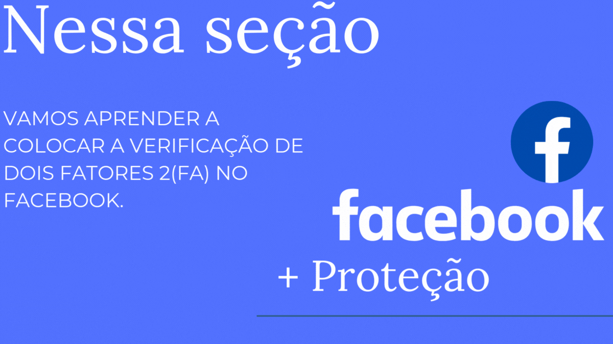

No mundo digital em constante evolução, a segurança online tornou-se uma preocupação crescente para todos os usuários da internet.
Golpes maliciosos cibernéticos estão se tornando cada vez mais sofisticados, visando roubar informações pessoais, financeiras e até mesmo identidades.
Nesta introdução, abordaremos três dos golpes cibernéticos mais comuns: roubo de contas, bots e contas falsas, e clonagem de perfil.
Esses golpes podem ter consequências devastadoras para os usuários, que podem ter seus dados roubados ou usados indevidamente.
1º Roubo de Contas
👇...O roubo de contas é um dos golpes cibernéticos mais frequentes.
Isso ocorre quando um hacker obtém acesso não autorizado às contas de usuários, seja por meio de phishing, malware ou senhas fracas.
Uma vez dentro da conta, o atacante pode roubar informações pessoais, fazer compras não autorizadas e até mesmo extorquir a vítima.
A proteção de suas contas online com senhas fortes e a ativação da autenticação de dois fatores são medidas essenciais para prevenir esse tipo de ataque.
Dicas de Prevenção
1º - Use senhas fortes e únicas para cada conta.
2º - Ative a autenticação de dois fatores (2FA).
3º - Evite clicar em links suspeitos e nunca
forneça informações pessoais em respostas a
e-mails ou mensagens não solicitadas.
4º - Mantenha seu software e antivírus atualizados.
2º Bots e Contas Falsas
👇...Bots e contas falsas são criados para enganar os usuários e podem ser usados para uma variedade de fins maliciosos,
como espalhar desinformação, executar fraudes ou coletar dados pessoais. Bots são programas automatizados que podem interagir com
usuários reais em redes sociais e outras plataformas online. Contas falsas, por outro lado, são perfis criados para se passar por indivíduos reais, muitas vezes para ganhar a confiança de outros usuários antes de realizar atividades fraudulentas.
Dicas de Prevenção
1º - Verifique o perfil antes de interagir: procure sinais de que pode ser falso,
como falta de atividade ou informações inconsistentes.
2º - Use ferramentas de verificação de contas e relatórios em redes sociais.
3º - Não forneça informações pessoais a contatos desconhecidos ou não verificados.
4º - Desconfie de mensagens ou solicitações não solicitadas que parecem urgentes ou emocionais.
3º Clonagem de Perfil
👇...A clonagem de perfil envolve a criação de um perfil falso que imita um perfil real, geralmente com o objetivo de enganar amigos e seguidores do usuário original. Os golpistas copiam informações, fotos e postagens para fazer o perfil parecer autêntico. Eles então usam o perfil clonado para pedir dinheiro ou informações pessoais aos contatos da vítima. É crucial estar atento a pedidos suspeitos e verificar a autenticidade dos perfis antes de compartilhar qualquer informação sensível.
Dicas de Prevenção
1º - Proteja suas informações pessoais e evite compartilhar dados sensíveis publicamente.
2º - Monitore regularmente seus perfis de redes sociais para identificar qualquer atividade suspeita.
3º - Altere suas configurações de privacidade para limitar o acesso a suas informações.
4º - Notifique seus contatos caso perceba que seu perfil foi clonado e reporte à plataforma imediatamente.
Dissertação sobre Golpes Maliciosos Cibernéticos
Os golpes maliciosos cibernéticos são uma ameaça crescente que pode causar sérios danos aos usuários. A perda de informações pessoais e financeiras, a usurpação de identidade e a exposição a fraudes são apenas algumas das consequências desses ataques. A conscientização sobre esses riscos e a implementação de práticas de segurança, como o uso de senhas fortes, a ativação de autenticação de dois fatores e a verificação de perfis suspeitos, são essenciais para proteger os usuários contra essas ameaças.
Ao entender a natureza desses golpes e como eles operam, os usuários podem tomar medidas proativas para se proteger e minimizar os riscos de cair em armadilhas cibernéticas. A prevenção é a melhor defesa contra os perigos do mundo digital.
Guia de Segurança Para o WhatsApp
1º Passo: Acessar as configurações
Entre no aplicativo WhatsApp, clique nos três pontinhos, no canto superior direito no menu inicial.
Selecione a opção configurações.
2º Passo:Acesse o menu da conta
No menu de configurações, selecione a opção Conta.
3º Passo: Acessar Confirmação em duas etapas
No menu da Conta vá até Confirmação em duas etapas.
4º Passo:
Aperte o botão verde ativar, na parte central inferior da tela.
5º Passo: Última Etapa da Verificação em Duas Etapas no WhatsApp
Confirme seu Código de Acesso:
Após configurar o código de acesso de seis dígitos,
você será solicitado a inseri-lo novamente para confirmação.
Adicione um Email de Recuperação (Opcional):
WhatsApp solicitará um endereço de email opcional.
Esse email pode ser usado para redefinir seu código de acesso caso você o esqueça.
Você pode adicionar um email ou pular essa etapa,
mas é altamente recomendado para maior segurança.
Conclusão
Após a confirmação do código de acesso e a adição do email (se aplicável),
a verificação em duas etapas estará ativada.
Guia de Segurança Para o Facebook

Veja como é fácil configurar a autenticação de doisfatores no Facebook.
Para ativar ou gerenciar a autenticação de dois fatores, você deve:
1º Passo
Clicar na seta para baixo no canto superior direito do Facebook e ir em Configurações.
2º Passo
Segurança e login, para acessar as Configurações de segurança e login da sua conta.
3º Passo
Rolar a tela para baixo até Usar autenticação de dois fatores e clicar em Editar.
4º Passo
Clicar em Ativar depois de ter selecionado e configurado um método de autenticação.
5º Passo: Você pode escolher entre dois métodos de autenticação de dois fatores para usar quando entrar em sua conta do Facebook usando um computador
ou dispositivo móvel não reconhecido:
- Códigos de SMS no seu celular
- Códigos de login de um aplicativo de autenticação de terceiros.
É necessário configurar pelo menos uma dessas opções para
usar a autenticação de dois fatores e garantir mais segurança
aos seus acessos.
Guia de Segurança Para o Instagram
1º Passo Abra o Instagram:
Vá para o seu perfil e toque no menu de três linhas no canto superior direito
2º Passo Acesse as Configurações e atividades:
Toque em configuração e atividades. Em seguida, toque em "Central de Contas".
3º Passo Vá para Senha e segurança:
Dentro da Central de Contas vá para Senha e segurança.
4º Passo Ativar a Autenticação de Dois Fatores
Toque em Autenticação de Dois Fatores.
5º Passo Escolher o Método de Autenticação
Você verá opções para ativar a autenticação de dois fatores
por SMS e Aplicativo de Autenticação. Escolha "SMS".
6º Passo Inserir o Número de Telefone
Digite o número de telefone associado à sua conta do Instagram e toque em "Avançar".
7º Passo Confirmar o Código
Você receberá um código por SMS. Digite esse código no Instagram paraconfirmar a ativação da autenticação de dois fatores.
8º Passo Salvar os Códigos de Reserva
O Instagram fornecerá alguns códigos de reserva. Guarde esses códigos em um lugar seguro.Eles podem ser usados para acessar sua conta caso você perca acesso ao seu telefone.
Dicas Extras
1.Não clique em links suspeitos ou des conhecidos2.Não baixe arquivos de fontes desconhecidas3.Verifique a autenticidade de mensagens e comentários